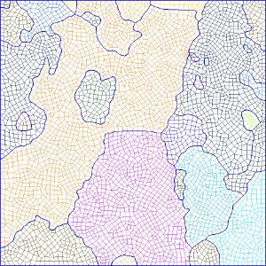

Contents
mtexdata small ebsd = ebsd('indexed'); grains = calcGrains(ebsd); G=gmshGeo(grains);
SMALL data loaded in variables
'ebsd'
ebsd = EBSD (<a href="matlab:docmethods(ebsd)">show methods</a>, <a href="matlab:plot(ebsd)">plot</a>)
Phase Orientations Mineral Color Symmetry Crystal reference frame
0 1197 (32%) notIndexed
1 1952 (52%) Forsterite light blue mmm
2 290 (7.8%) Enstatite light green mmm
3 282 (7.6%) Diopside light red 12/m1 X||a*, Y||b*, Z||c
Properties: bands, bc, bs, error, mad, x, y
Scan unit : um
Basic use
The geometry described by the object G can be meshed using the Gmsh software as follows:
mesh(G,'default.msh')
The above command results in a 1 element thick mesh, consisting in linear wedge elements (6-node 3D elements. The element size is (roughly) equal to the EBSD resolution.
Constant element size
The default element size can be set as follows:
mesh(G,'constant_elmtSize.msh','ElementSize',50)
The resulting mesh cannot be (easily) displayed in MATLAB. Thus, the following illustrates the geometry when opening the mesh file with Gmsh:
The unit here is the same as the EBSD map (ususally µm).
Size gradient
Let be the local element size at coordinates  . The element size can be set as an increasing distance from the grains boundary such that:
. The element size can be set as an increasing distance from the grains boundary such that:

with:
 the element size at grain boundaries
the element size at grain boundaries the euclidean distance from the closest grain boundary.
the euclidean distance from the closest grain boundary.
This can be done with the following command:
mesh(G,meshFile,'ElementSize',s0,'gradient',k);

Element size Depending on the curvature of grain boundaries
The local curvature of grain boundaries can be used to set the element size. For instance, the following command use 5 nodes to describe a full circle:
mesh(G,'curvature.msh','Curvature',5);

Element type
The default element type for meshing is linear wedge. It can be changed to brick element
mesh(G,'brick.msh','ElementType','Brick');

or tetrahedrons
mesh(G,'tet.msh','ElementType','Tet');
If you wants to work in 2D only, use triangular (Tri) or quandrangular (Quad) elements instead:
mesh(G,'Tri.msh','ElementType','Tri'); mesh(G,'Quad.msh','ElementType','Quad');
Dump the geometry in an ASCII file
The geometry can be exported into a Gmsh-readable (and somehow human-readable) format using the following command:
savegeo(G,'geometry.geo')